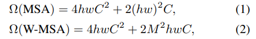
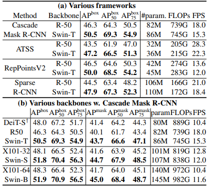
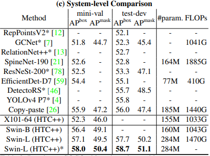
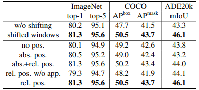

論文
１．どんなものか
言語から視覚へのtransformerの適応には
・視覚的実体のスケールの大きな変化
・テキスト中の単語と対応する画像の解像度との差から生じる計算の困難性
などの２つのドメインの違いから生じる問題が課題である．
この問題に対して表現がshifted windowsで計算される階層的transformerを提案している．
２．先行研究との差分
今までのtransformerはself-attensionの計算量が二次関数に従うため，高解像度画像を用いたピクセル単位のタスクにおいては
計算量の観点から実現不可能だった．
これに対して，swin transformerは階層的特徴マップを構築することで画像サイズに対して線形な計算量で計算可能となった．
階層的とは，transfirmerの深い層では隣接するパッチを徐々にマージして行くことを示す．これにより，特徴ピラミッドネットワーク
やU-NET等を容易に利用できる．
３．技術や研究のキモ
アーキテクチャ
層が深くなるにつれてパッチを統合していく．
swin-transformer-blockはself-attensionを適応した後の出力を示す．
ここで特徴マップのサイズはvggやresnetと同じになるように調整されている．
これは既存のcnnがバックボーンになっている部分を置き換えられるようにとのこと．
Swin-Transformer-Block
このブロックは通常のtransformerで用いられているmultihead-self-attensionの部分が
shifted windowモジュールに置き換えられている．
それ以外は通常のtransformerと同じ構造をしている．
詳細な構造は上の図を参照．
Shifted-window
通常のtransformerではグローバルなself-attensionを行うため，高解像度画像を用いるようなタスクでは計算が時に関数的に増加するため適応が困難であった．それに対して，shifted-windowどとにself-attensionをとることでこの問題を解決した．

一方で，特定の領域にのみattensionを用いるため，通常のものより能力が制限されてしまう．そこで，モジュールごとに前回のモジュールではattensionを見なかった領域について attension計算を行うようにwindowを$(w,h)=(\frac{M}{2},\frac{M}{2})$分移動させる．
画像に対してwindowが外れてしまう場合にはmaskを活用．この部分が今愛知まだ自分の中で分かってないので再度勉強が必要．
４．有効性の証明
imageNet-1k，COCO，ADE20Kを用いてそれぞれ画像分類，物体検出，セグメンテーションを実験．
ImageNetにおけるclassification
> transformerのベースであるDeitと比較．同程度のモデルアーキテクチャの複雑さでありながら，大幅に性能向上．また当時の最新convNetであるregnetやefficientnetに対してもわずかに性能が向上しており，シンプルなswin transformerが徹底的なアーキテクチャ研究により 開発されたconvNetの性能を向上したことはswinの可能性について示している．
ICOCOにおけるobject detection
> resnet50と比較してswinはわずかにモデルサイズ、FLOP、レイテンシが大きくなるものの，性能向上が確認できた． また，モデルサイズ，FLOP，レイテンシが同程度のresnextとの比較実験においても優位性が確認された． Deitに対しても優位性が確認され，推論速度についても大幅に早くなっている．- 
- 
ADE20Kを用いたSemantic Segmentation
> transformerのベースであるDeit-sとswin-sのひあっくでは同程度の計算コストにおいてmIoUで優位．resnet101，resnextとの比較実験においても同様に優位性が確認された．
shifted windowの有効性証明
> 上記で載せた実験について通常の1windowの例とshifted windowで実験比較．また，相対位置バイアスをshiftに乗せた場合の実験も行った．． 
５．議論
画像分類精度については絶対位置埋め込みにより分類性能は向上するものの，
物体検出や，セグメンテーションにおいてはむしろ性能が下がってしまう．
感想
self-attensionについては自身の理解が全く及んでいないため，Transformer，Vision
Transformerについて勉強しつつ理解する必要がある．